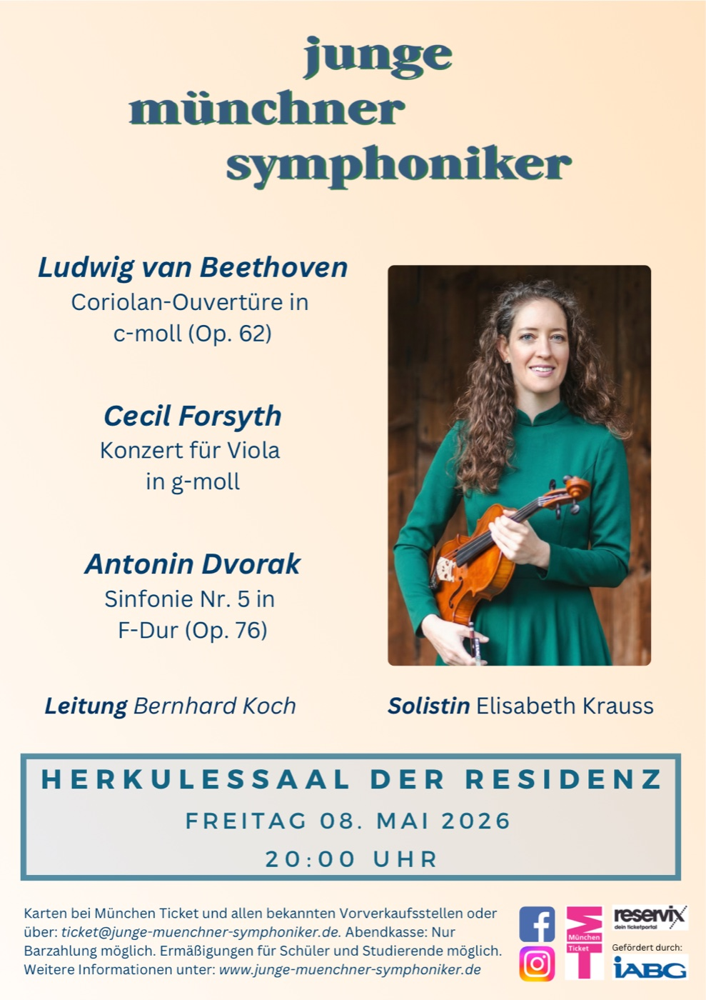

Junge Münchner
Symphoniker
Ein junges, engagiertes Orchester in München – Klassische Musik mit Leidenschaft und Dynamik
Ein junges, engagiertes Orchester in München – Klassische Musik mit Leidenschaft und Dynamik

Werke von Dvořák, Beethoven und Forsyth – mit Solistin Elisabeth Maria Krauß (Bratsche)
Termine:
Sonntag, 26. April 2026, 18:00 Uhr – Kulturzentrum Trudering
Freitag, 8. Mai 2026, 20:00 Uhr – Herkulessaal der Münchner Residenz
Tickets kaufenEin Dirigent, zwei Orchester – Bernhard Koch leitet die Jungen Münchner Symphoniker und die Camerata München.
Die Jungen Münchner Symphoniker sind ein junges, engagiertes Orchester in München, überwiegend aus Studenten bestehend. Unser Publikum schätzt, wie wir Freude, Frische und Dynamik mit professionellen Standards und musikalischer Leidenschaft verbinden.
Mehr erfahren →
"Ihre Aufführung hat mich zum begeisterten Bruckner-Liebhaber gemacht. Die virtuose Meister-Cellistin Kokoru Ryu brillierte in den schwierigsten Passagen."
Frühlingskonzert 2025
"Es war für uns sehr beeindruckend, mit welchem Können und Engagement die Musik Schumanns und Bruckners wiedergegeben wurde."
Frühlingskonzert 2025
"EIN MEISTERKONZERT mit einem MEISTER-KOCH! Ich bin begeistert von Ihrer Interpretation, in Dynamik, Tempi, der Tschaikowski'schen Seele."
Herbstkonzert 2022
Du spielst ein Orchesterinstrument und möchtest in einem engagierten, jungen Ensemble musizieren? Wir suchen immer talentierte Musikerinnen und Musiker!
Jetzt informierenMitglied bei